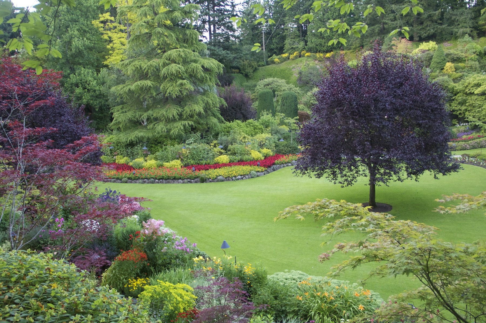
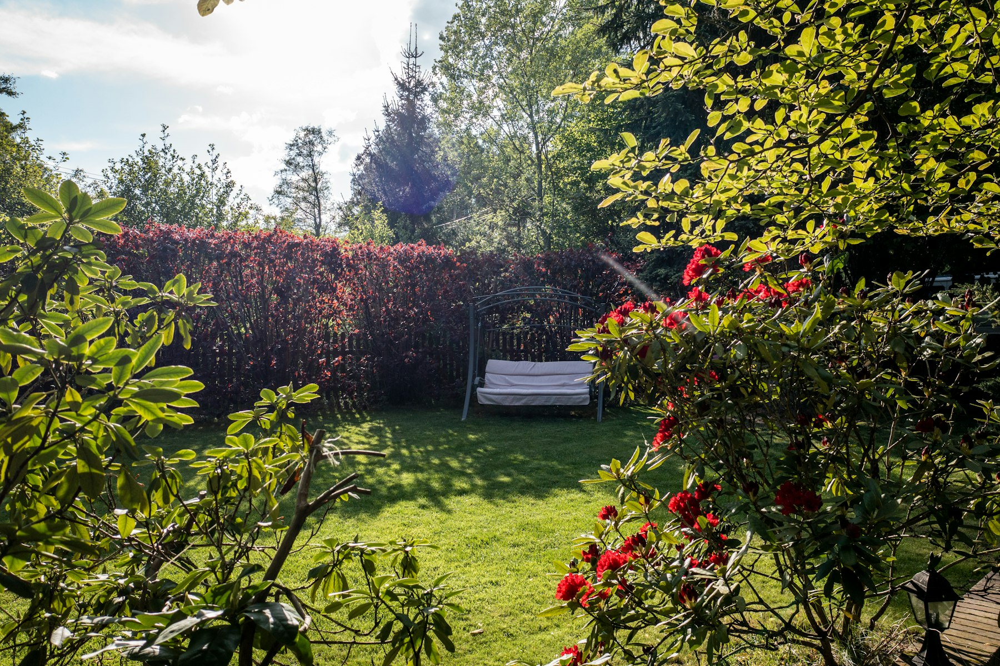
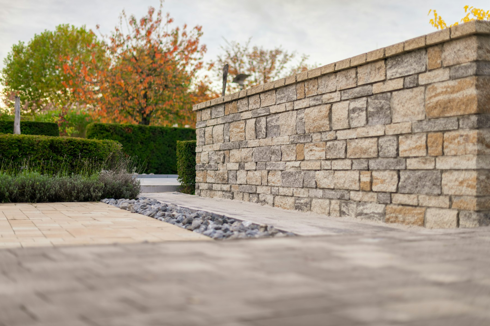
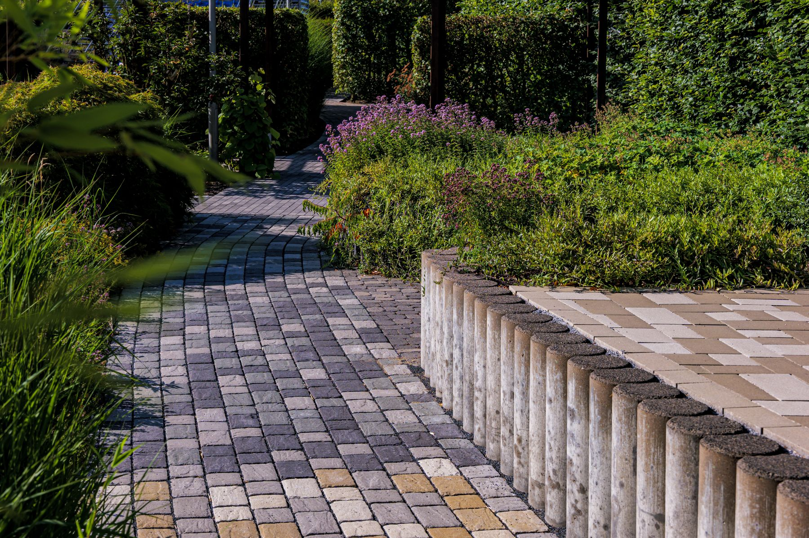
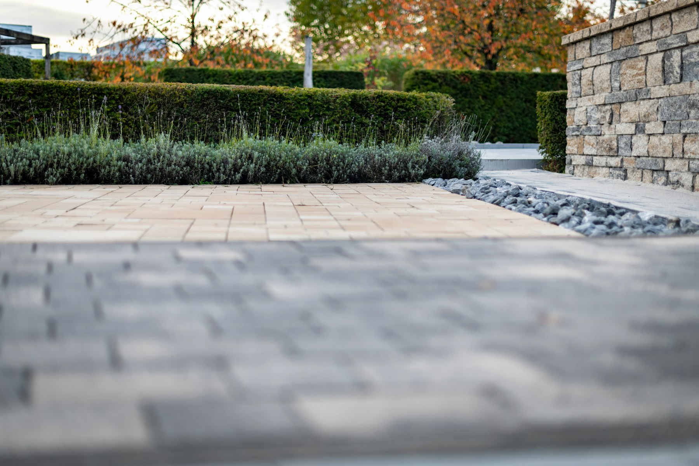
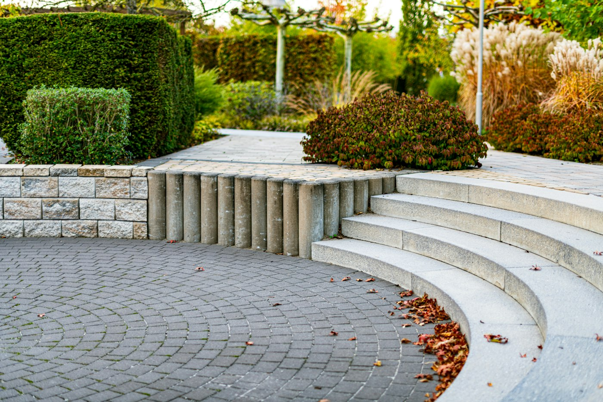
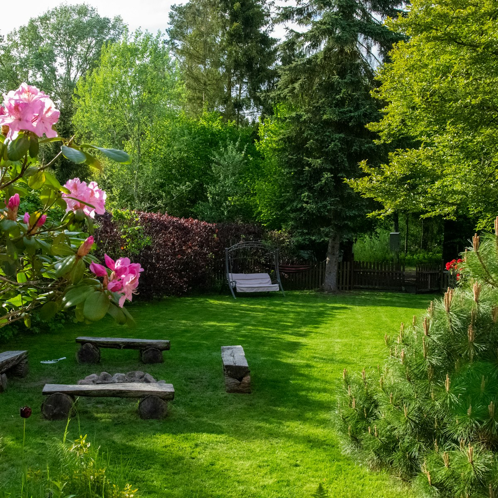
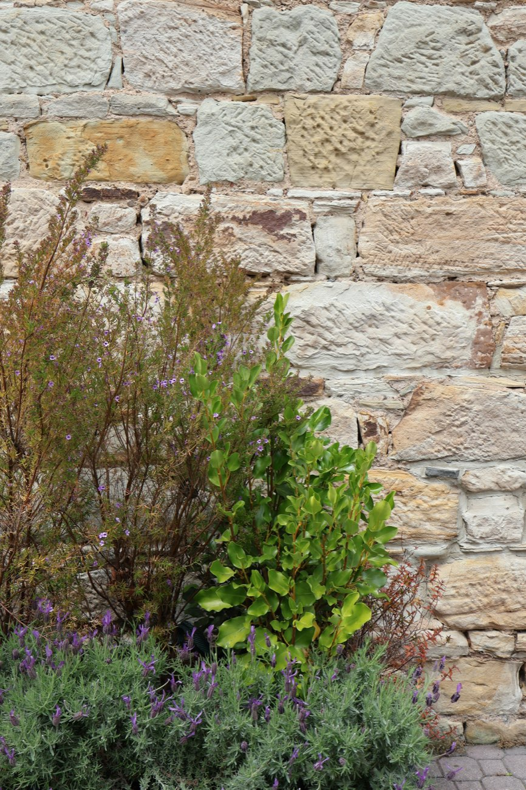
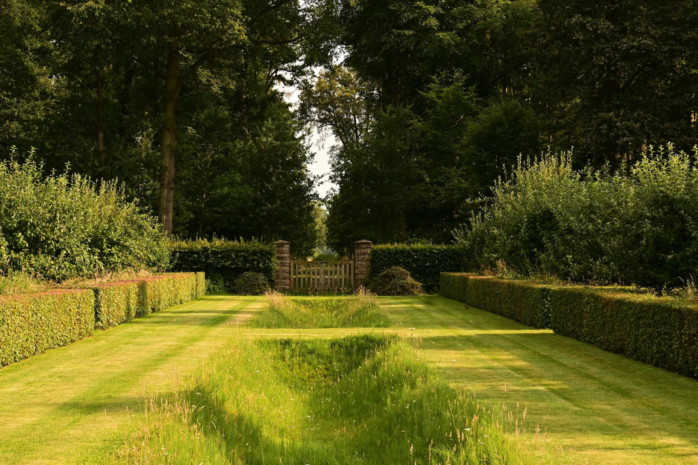

Meister- & Fachbetrieb · Bielefeld
Planung und Umsetzung.
Aus einer Hand.
Garten- und Landschaftsbau Wimmer gestaltet, baut und pflegt Gärten in Bielefeld und Umgebung.

Der Betrieb
Ein Meisterbetrieb aus Bielefeld.
Christof Wimmer ist Gartenbaumeister und seit über 20 Jahren im Garten- und Landschaftsbau. Mit seinem Team plant und baut er Terrassen, Wege, Mauern, Zäune und Pflanzungen und übernimmt die Pflege. Vom ersten Gespräch bis zur fertigen Fläche haben Sie einen Ansprechpartner.
- 2006Meisterprüfung
- 2012Gründung von Feine Gärten
- 2017Anerkannter Fachbetrieb
- 2021Eigene Halle in Werther

Leistungen
Alles rund um Ihren Garten.
Terrassen und Wege, Mauern, Zäune und die Pflege Ihres Grundstücks.

01Pflasterverlegung
Terrassen, Wege, Zufahrten und Stufen aus Beton-, Klinker-, Keramik- oder Naturstein.

02Grundstückspflege
Das ganze Jahr über: Vertikutieren, Rasen, Hecken, Laub und Baumfällung.

03Natursteinmauern
Gartenmauern und Böschungssicherung aus Granit, Muschelkalk, Sandstein oder Schiefer.
 04
04Zaunbau
Zäune und Tore aus Metall, Holz, WPC oder Maschendraht, als Einfriedung oder Sichtschutz.
Ihr Vorhaben
Was steht bei Ihnen an?
Wählen Sie Ihr Vorhaben und sehen Sie, was uns beim ersten Gespräch hilft.
Die Terrasse oder der Weg soll neu gepflastert werden.
Wir prüfen Fläche, Untergrund und Anschlüsse ans Haus und besprechen Material und Verlegemuster.
Das hilft uns beim ersten Gespräch
- Ein paar Fotos der Fläche und des Hauses
- Ungefähre Maße in Metern
- Wünsche zu Material und Farbe, gern mit Beispielfotos
Eine Zufahrt oder ein Hauseingang soll befestigt werden.
Zufahrten müssen Autos tragen, Stufen und Podeste sicher begehbar sein: Aufbau, Gefälle und Entwässerung planen wir gleich mit.
Das hilft uns beim ersten Gespräch
- Fotos von Zufahrt und Eingang
- Welche Fahrzeuge die Fläche nutzen
- Ob Stufen oder ein Podest gewünscht sind
Eine Böschung muss gestützt oder eine Mauer gebaut werden.
Natursteinmauer, Trockenmauer oder Betonfertigteile: Wir prüfen Höhe, Erddruck und Entwässerung und schlagen den passenden Aufbau vor.
Das hilft uns beim ersten Gespräch
- Fotos der Böschung aus mehreren Richtungen
- Ungefähre Länge und Höhe
- Ob die Mauer bepflanzt werden soll
Ein Zaun, ein Tor oder ein Sichtschutz fehlt.
Zäune und Tore aus Metall, Holz, WPC oder Maschendraht, als Einfriedung oder Sichtschutz zum Nachbarn.
Das hilft uns beim ersten Gespräch
- Fotos der Grundstücksgrenze
- Länge in Metern und gewünschte Höhe
- Ob ein Tor oder eine Tür eingeplant werden soll
Das Grundstück soll regelmäßig gepflegt werden.
Für private Gärten und Firmengelände übernehmen wir die Pflege das ganze Jahr, für Gewerbekunden auf Wunsch auch Reparaturen und Winterdienst.
Das hilft uns beim ersten Gespräch
- Größe des Grundstücks oder der Fläche
- Welche Arbeiten regelmäßig anfallen
- Ob es um ein Privatgrundstück oder eine Firma geht
Ein Baum muss gefällt werden.
Baumfällung inklusive Wurzelfräsung, bei Bedarf mit Baggerarbeiten, damit die Fläche neu genutzt werden kann.
Das hilft uns beim ersten Gespräch
- Ein Foto vom Baum und seiner Umgebung
- Ungefähre Höhe und Abstand zu Gebäuden
- Ob der Stubben entfernt werden soll
Ablauf
So geht es weiter.
Vom ersten Anruf bis zur fertigen Fläche haben Sie einen Ansprechpartner.
Anfrage
Anruf, WhatsApp oder Kontaktformular: Schildern Sie kurz Ihr Vorhaben.
Beratung vor Ort
Wir sehen uns Garten, Fläche und Untergrund an und hören zu.
Vorschlag und Angebot
Sie erhalten geprüfte Vorschläge und ein unverbindliches Angebot.
Umsetzung
Unser Team baut mit eigenen Maschinen vom Betriebshof in Werther.

Willensstärke.Wunderschönes.Wertbeständig.
Dafür steht Garten- & Landschaftsbau Wimmer.
Referenzen
Das haben wir gebaut.
Einblicke in fertige Arbeiten. Zum Vergrößern anklicken.


Seitlich wischen oder scrollen
Kontakt
Was kann ich für Sie tun?
Rufen Sie an oder schreiben Sie per WhatsApp oder E-Mail. Nach einer Beratung vor Ort erhalten Sie ein unverbindliches Angebot.
- 0178 458 11 27montags bis freitags, 07.00 – 16.00 Uhr
- WhatsApp schreibenan 0178 458 11 27
- info@feine-gaerten.comWir antworten so schnell wie möglich.